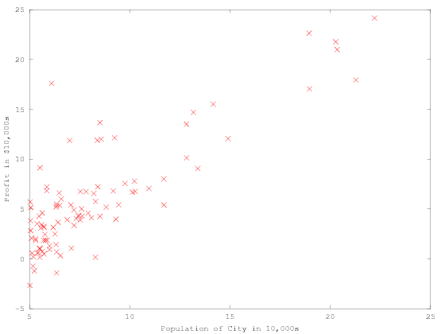
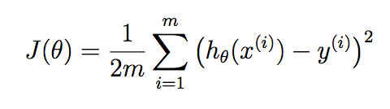
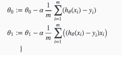
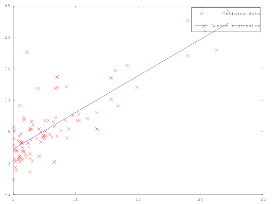
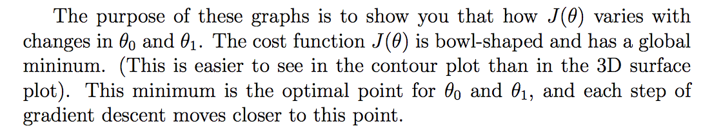
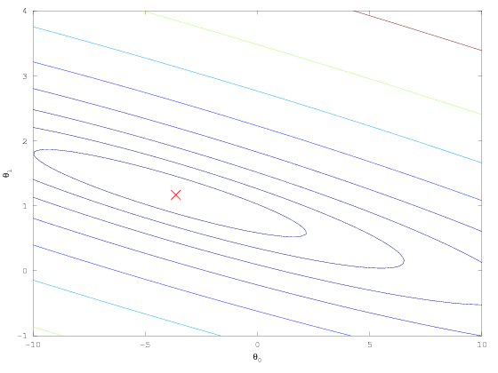
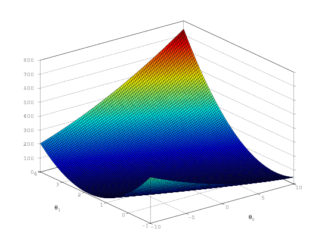

Sujet¶
Suppose you are the CEO of a restaurant franchise and are considering different cities for opening a new outlet. The chain already has trucks in various cities and you have data for profits and populations from the cities. You would like to use this data to help you select which city to expand to next The file ex1data1.txt contains the dataset for our linear regression problem. The first column is the population of a city and the second column is the profit of a food truck in that city.
Loading and ploting data¶
data = load('ex1data1.txt'); % read comma separated data
X = data(:, 1);
y = data(:, 2);
m = length(y);
plot(X, y, 'rx');
ylabel('Profit in $10,000s');
xlabel('Population of City in 10,000s');

Computing the cost¶
The objective of linear regression is to minimize the cost function: 
Initialisation¶
we add another dimension to our data to accommodate the θ0 intercept term. We also initialize the initial parameters to 0 and the learning rate alpha to 0.01
X = [ones(m, 1), data(:,1)]; % Add a column of ones to x
theta = zeros(2, 1); % initialize fitting parameters Theta 0 et Theta 1 = 0
% Some gradient descent settings
iterations = 1500;
alpha = 0.01;
Cost function¶
function J = computeCost(X, y, theta)
%COMPUTECOST Compute cost for linear regression
% J = COMPUTECOST(X, y, theta) computes the cost of using theta as the
% parameter for linear regression to fit the data points in X and y
% Initialize some useful values
m = length(y); % number of training examples
J = 1 / (2 * m) * sum(((X * theta) - y) .^ 2);
end
Gradient descent¶

function [theta, J_history] = gradientDescent(X, y, theta, alpha, num_iters)
%GRADIENTDESCENT Performs gradient descent to learn theta
% theta = GRADIENTDESCENT(X, y, theta, alpha, num_iters) updates theta by
% taking num_iters gradient steps with learning rate alpha
% Initialize some useful values
m = length(y); % number of training examples
J_history = zeros(num_iters, 1);
for iter = 1:num_iters
t1 = theta(1) - alpha * (1 / m) * sum(((X * theta) - y) .* X(:, 1));
t2 = theta(2) - alpha * (1 / m) * sum(((X * theta) - y) .* X(:, 2));
% Feed our new theta values before computing cost.
% Not done inline
theta(1) = t1;
theta(2) = t2;
% Save the cost J in every iteration
J_history(iter) = computeCost(X, y, theta);
end
end
Test the gradient descent¶
% run gradient descent
theta = gradientDescent(X, y, theta, alpha, iterations);
% print theta to screen
fprintf('Theta found by gradient descent:\n');
fprintf('%f\n', theta);
Theta found by gradient descent:
-3.630291
1.166362
Ploting the resulting model¶
plot(X(:,2), y, 'rx'); %take the second column as we have added a extra one
hold on;
plot(X(:,2), X*theta, '-')
legend('Training data', 'Linear regression')

Use the model to predict something¶
% Predict values for population sizes of 35,000 and 70,000
predict1 = [1, 3.5] *theta;
fprintf('For population = 35,000, we predict a profit of %f\n', predict1*10000);
predict2 = [1, 7] * theta;
fprintf('For population = 70,000, we predict a profit of %f\n', predict2*10000);
For population = 35,000, we predict a profit of 4519.767868
For population = 70,000, we predict a profit of 45342.450129
Visualizing J(θ)¶

% Grid over which we will calculate J
theta0_vals = linspace(-10, 10, 100);
theta1_vals = linspace(-1, 4, 100);
% initialize J_vals to a matrix of 0's
J_vals = zeros(length(theta0_vals), length(theta1_vals));
% Fill out J_vals
for i = 1:length(theta0_vals)
for j = 1:length(theta1_vals)
t = [theta0_vals(i); theta1_vals(j)];
J_vals(i,j) = computeCost(X, y, t);
end
end
% Because of the way meshgrids work in the surf command, we need to
% transpose J_vals before calling surf, or else the axes will be flipped
J_vals = J_vals';
% Surface plot
figure;
surf(theta0_vals, theta1_vals, J_vals)
xlabel('\theta_0'); ylabel('\theta_1');
% Contour plot
figure;
% Plot J_vals as 15 contours spaced logarithmically between 0.01 and 100
contour(theta0_vals, theta1_vals, J_vals, logspace(-2, 3, 20))
xlabel('\theta_0'); ylabel('\theta_1');
hold on;
plot(theta(1), theta(2), 'rx', 'MarkerSize', 10, 'LineWidth', 2);

